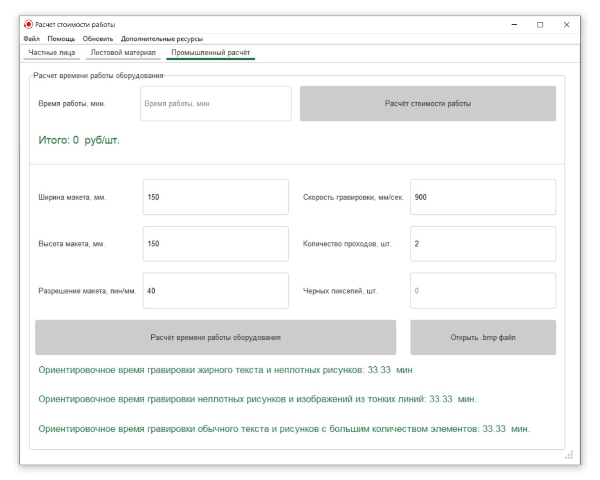
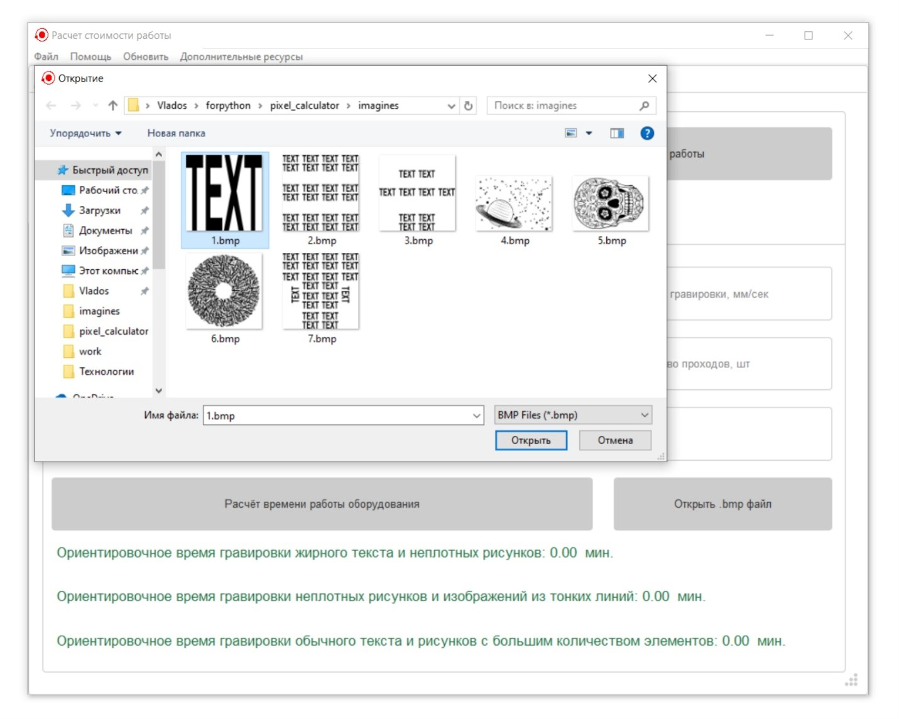
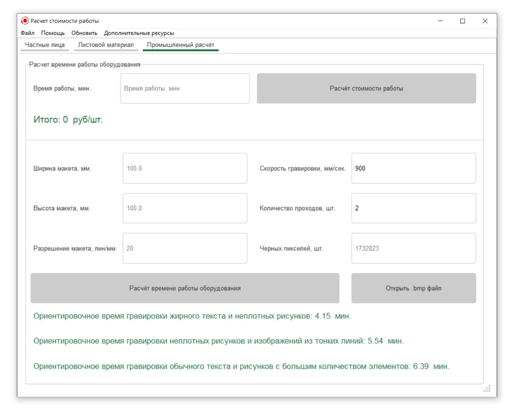

Приближённый расчёт времени гравировки .bmp макета
Приближённый расчёт времени гравировки .bmp макета осуществляется в
блоке "Расчёт времени гравировки" (Рисунок 1) на
вкладке «Промышленный расчёт» главного окна
приложения.
Расчёт времени гравировки простой геометрической формы. В
этом случае заполняются поля ввода габаритов макета, разрешения
макета, скорости гравировки и количества проходов. После чего
необходимо нажать на кнопку «Расчёт времени работы оборудования»
(Рисунок 2).

Рисунок 2 - Пример расчёта времени гравировки для прямоугольника
⚠
Расчёт реализован для прямоугольной формы гравировки. Если форма иная,
то необходимо внести поправку времени, равную отношению площади
искомой фигуры к площади прямоугольника с заданными габаритами.
Например, для круга диаметром 10 мм, необходимо вводить габариты
(ширину и высоту) 10 мм, а поправка составит π/4≈0,76.
Погрешность метода в таком случае сводится к минимуму.
Расчёт времени гравировки выбранного .bmp макета. В
этом случае следует сначала нажать на кнопку «Открыть .bmp файл» и
выбрать нужный файл (Рисунок 3).

Рисунок 3 - Выбор .bmp макета в диалоговом окне
В результате поля ввода габаритов макета, а также его разрешения
заполнятся автоматически. Останется только ввести параметры
гравировки (скорость и количество проходов) в соответствующие поля ввода и
нажать на кнопку «Расчёт времени работы оборудования» (Рисунок
4).

Рисунок 4 - Пример расчёта времени гравировки
выбранного пользователем .bmp макета
⚠
Важно, чтобы .bmp файл имел монохромный (чёрно-белый) формат, т.к.
программа считывает только абсолютно черные и абсолютно белые
пиксели, игнорируя другие (серые, цветные и т.д.).